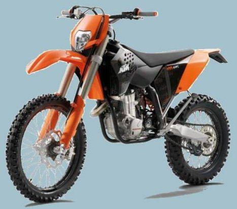
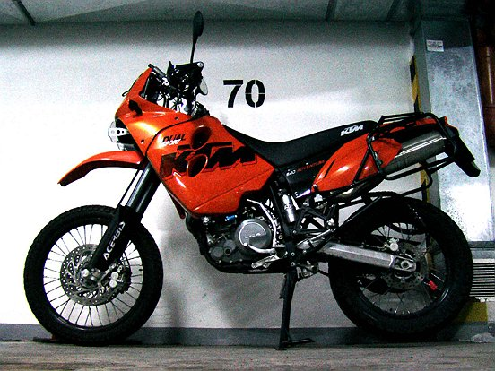
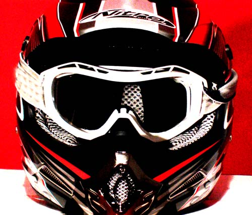

MotoSyberia.2.0.2009
KTM EXC 400
Zbiorniki
Pirelli
MotoSyberia.1.0.2007
KTM LC4 640 Adventure
Kolor niebieski sponsorowany przez Blue Media
Nitro MX418
Bel-Ray oleje
Iridium by Padre
Larsson
Pirelli
Cumulus
Inni
KTM EXC 400


Wow wow wow wow!
Wr
Zbiorniki
Nasze piekielne machiny musza miec conajmniej 35L wachy.
W tym celu zakadamu najwikszy zbiornik acerbisa (zamiast oryginalnego):
24L - chociaz ktm ma taki sam i podaje, ze zbiornik ma 21.5L :/

Zamiast lampy chcemy zamontowac taki smieszny (hue hue hue) zbiornik 5L:

...czyli optymistycznie mamy juz 29L, wiec jeszcze 6L/8L gdzies po kieszeniach pochowamy.
Zeby to wszystko (nasze 100kg + wache +..) moto udzwignelo wymienilismy spryny na duo twardsze (ktm: 91410017s, 91210007).
Jezeli chodzi o prace z niskooktanowa benzyna to jestem optymista;) Silnik w DRZ400 ma stopie sprania 11.3:1 i radzi sobie bez problemu z wacha 80 oct. Silnik w naszym EXC400 ma tylko 11.1:1, wiec nie powinno byc problemu.
Dla porwnania:
-TT600R 8.5:1
-XR650R 10.0:1
-EXC400 11.1:1
-DRZ400 11.3:1
-LC4 Adv 11.7:1
-EXC 530 11.9:1
-WR450F 12.3:1
Wr
Pirelli
Pirelli eto ocien haroszaja kampania. Nie dosc, ze robia fajne opony, to jeszcze pomagaja nam w zrealizowaniu tego przesiaknietego zlem planu.

Tym razem bedziemy orac oponami MX Extra:

...a w srodku piekne moussy:

..dzieki temu nie musimy wozic detek, ktore waza 77 ton. Zamiast tego mozemy wziac wiecej kremow do opalania z filtrem 6.
Spasiba Pirelli!

Wr
KTM LC4 640 Adventure


Po wycieczce: Aj love this bajk! Niesamowity sprzet, praktycznie bez zadnych modyfikacji dostajemy sprzet gotowy do ostrej wycieczki.
-zbiornik 26L, wiec w zalerznosci od terenu, jakosci wachy i stylu jazdy mielismy zasieg 400km - 500km. Na te pare miejsc gdzie to nie wystarczalo
mielismy dodtakowy 10L plastikowy kanister;
-teren: wiekszosc trasy to szutry, dziurawe szutry, kamieniste odcinki, blotniste, mongolskie stepy - tutaj KTM rzadzi; mozna bylo ostro grzac - zawieszenie
WP idealnie pracowalo; w kilku miejscach bylo ostre rzezbienie - nie jest to domena KTMa (180kg), ale przy odpowiednim zacieciu mozna
samemu sobie poradzic z tym sprzetem - co jest bardzo dobre na psyche;
-asfalt: dla mnie super, duzo mniejsza walka z wiatrem niz w typowym enduraku bez owiewki; mialem tez wiecej mocy niz w poprzednim (rowniez cudnym) moto
wiec 600km-1000km na przelotach dziennie bylo czysta przyjemnoscia; jedynie Wojtas narzekal na wibracje, az stracil czucie w lewej rece; reszcie zbokow
wibracje sprawialy dzika przyjemnosc;
Wacha 76oct - w KTM jest mozliwosc przelaczenia modulu na tryb - niskooktanowy; wiekszosc trasy jechalismy na 80; w Mongolii na 76oct i motocykl
pieknie jechal; koniecznie jednak nalerzy wsadzic dodatkowy filtr paliwa i czesto myc filtr (mokry, olej) powietrza (kilkaset kilometrow za kamazami po szutrze i wszystko
jest pieknie zaklejone pylem); nagorsze paliwo w Tadzykistanie; w Mongolii niby 76oct ale jakosc super;
Modyfikajce:
-wywalony eko-badziew
-skarpety na przednim amorku
-wysoki blotnik
-sruba do regul. mieszanki w gazniku
-stelaz pod gps/radio na kokpicie
-stelaz pod kufry (w 2007 byl dodawany do moto gratis)
Wr
Kolor niebieski sponsorowany przez Blue Media

Na wyprawie MotoSyberia kolor niebieski sponsorowany jest przez firme Blue Media.
Niebieski to pieeekny kolor!
Wr
Nitro MX418
Sponsorem MotoSyberii2007 jest firma Nitro - producent wypasionego kasku Nitro MX418.

Kask ma mnstwo wywietrznikw, fajny ksztat, wygodne zapicie zatrzaskowe, daszek z moliwoci regulacji pooenia, a przede wszystkim wyglda gronie i o to chodzi.
Kaski spisaly sie rewelacyjnie! Az glupio sie czuje tak bez kasku.
Trzeba oczywiscie lubic otwarte kaski i permanetne chlodzenie twarzy - aj lajk!
Par fotek z kaskiem Nitro w roli gwnej z MotoAfryki2005:
Wicej Nitro-MotoAfrykaskich fotek tutaj.
Kask Nitro moesz kupi na przykad tutaj.
Wr
Bel-Ray oleje

Sponsorem MotoSyberii2007 jest firma Bel-Ray - producent wysokiej klasy olejw motocyklowych.

Nasze KTMy bda karmione specjalnym olejem do silnikw jednocylindorwych - Bel-Ray Thumper 4-Stroke Racing: Olej sportowy Bel-Ray Thumper to najwyszej jakoci olej
psyntetyczny, opracowany specjalnie z myl o zastosowaniach do 4-suwowych, jednocylindrowych
silnikw motocyklowych o znacznym wysileniu montowanych na caym wiecie do maszyn uczestniczcych w
rajdach motokrosowych, enduro i Supermoto.
Przystosowany do pracy w najtrudniejszych warunkach olej odznacza si nastpujcymi cechami:
-zmniejszonym zuyciem oleju w wysokich temperaturach,ochron przez nagym spadkiem lepkoci w wysokiej temperaturze oraz wysokim stopniem zapobiegania napreniom cinajcym
-ochron przed dostawaniem si paliwa do oleju
-zawartoci substancji zapobiegajcych zuyciu silnika i wyduajcych jego ywotno
acuchy bdziemy smarowa smarem Bel-Ray Chain Lube: Jest to nowa, wzbogacona wersja wyprbowanego, znanego doskonale oleju do acuchw motocyklowych. Do produktu dodaje
si opracowan przez Bel-Ray substancj o nazwie Molyphos, ktra poprawia trwao powoki smarnej,
stanowicej ochron elementw napdu przed nadmiernym tarciem przy cinieniu przekraczajcym 6800 atm.
Produkt zapewnia najwyszej klasy ochron wszystkich typw acuchw rolkowych oringowych i X'ringowych.
Skadniki antykorozyjne zapewniaj pen blokad acucha przed dostpem wilgoci.
Filtry powietrza bed si kpay w Bel-Ray Foam Filter: Dziki znakomitej kleistoci, zawarte w powietrzu czstki kurzu, py, a nawet wilgo zostaj zatrzymane.
Olej nie zmywa si, nie zlepia ani nie zatyka filtra. Substancja ma barw ciemnoniebiesk, co uatwia
stwierdzenie zapenienia filtra. Olej schnie bardzo szybko, a wiec nie powoduje zbyt dugich przerw
w podry.
Wr
Iridium sponsored by Padre

IRIDIUM satellite phone sponsored by gud man Padre Woitek Swinarski. Bravoo!
Wr
Larsson

Wielkie dzieks dla firmy LARSSON za wsparcie wyprawy MotoSyberia.
Wr
Pirelli
Wielkie dzieks dla firmy Pirelli za wsparcie wyprawy MotoSyberia. Jedziemy i rzezbimy na oponach Pirelli MT-21 i MT-18.
Wr
Cumulus

Wielkie dzieks dla firmy Cumulus za wsparcie wyprawy MotoSyberia.
Bedziemy sobie wygodnie spac w spiworach Mysterious Traveller 650. Szczegolnie we wrzesniu na Czukotce nam sie przydadza. Juz sie nie moge doczekac pierwszych przymrozkow ;)
Wr
Prokajak

Big THX dla firmy Prokajak, gdzie na wszystkie wyjazdy zaopatrujemy sie w wytrzymale worki kajakowe.
Wr
7anna - Crank Brothers

Crank Brother Power Pump
Wielkie dzieks dla firmy 7anna - importera sprzetu Crank Brother! Jedziemy zaopatrzeni w pompke Power Pump.
Wr